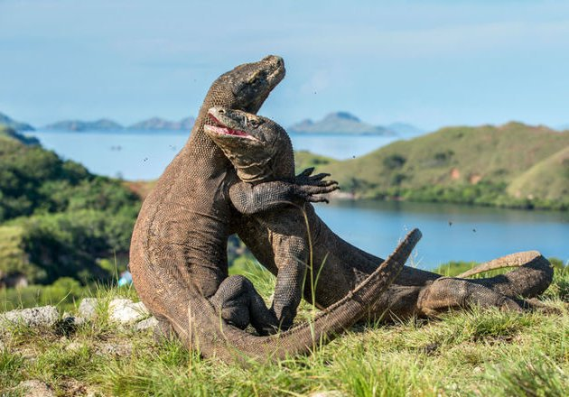

Post by Adytia, Sunday 06 Juny 2018
Pulau Komodo adalah sebuah pulau yang terletak di Kepulauan Nusa Tenggara. Pulau Komodo dikenal sebagai habitat asli hewan komodo. Pulau ini juga merupakan kawasan Taman Nasional Komodo yang dikelola oleh Pemerintah Pusat. Pulau Komodo berada di sebelah timur Pulau Sumbawa, yang dipisahkan oleh Selat Sape.
Secara administratif, pulau ini termasuk wilayah Kecamatan Komodo, Kabupaten Manggarai Barat, Provinsi Nusa Tenggara Timur, Indonesia. Pulau Komodo merupakan ujung paling barat Provinsi Nusa Tenggara Timur, berbatasan dengan Provinsi Nusa Tenggara Barat.
Di Pulau Komodo, hewan komodo hidup dan berkembang biak dengan baik. Hingga Agustus 2009, di pulau ini terdapat sekitar 1300 ekor komodo. Ditambah dengan pulau lain, seperti Pulau Rinca dan dan Gili Motang, jumlah mereka keseluruhan mencapai sekitar 2500 ekor. Ada pula sekitar 100 ekor komodo di Cagar Alam Wae Wuul di daratan Pulau Flores tapi tidak termasuk wilayah Taman Nasional Komodo.
Selain komodo, pulau ini juga menyimpan eksotisme flora yang beragam kayu sepang yang oleh warga sekitar digunakan sebagi obat dan bahan pewarna pakaian, pohon nitak ini atau sterculia oblongata di yakini berguna sebagai obat dan bijinya gurih dan enak seperti kacang polong.
Pulau Komodo juga diterima sebagai Situs Warisan Dunia UNESCO, karena dalam wilayah Taman Nasional Komodo, bersama dengan Pulau Rinca, Pulau Padar dan Gili Motang
Pada tahun 1910 orang Belanda menamai pulau di sisi selatan Provinsi Nusa Tenggara Timur ini dengan julukan Pulau Komodo. Cerita ini berawal dari Letnan Steyn van Hens Broek yang mencoba membuktikan laporan pasukan Belanda tentang adanya hewan besar menyerupai naga di pulau tersebut. Steyn lantas membunuh seekor komodo tersebut dan membawa dokumentasinya ke Museum and Botanical Garden di Bogor untuk diteliti.
Tahun 2009, Taman Nasional Komodo dinobatkan menjadi finalis "New Seven Wonders of Nature" yang baru diumumkan pada tahun 2010 melalui voting secara online di www.N7W.com.Pada tanggal 11 November 2011, New 7 Wonders telah mengumumkan pemenang sementara, dan Taman Nasional Komodo masuk kedalam jajaran pemenang tersebut bersama dengan, Hutan Amazon, Teluk Halong, Air Terjun Iguazu, Pulau Jeju, Sungai Bawah Tanah Puerto Princesa, dan Table Mountain. Taman Nasional Komodo mendapatkan suara terbanyak.
Sumber : https://id.wikipedia.org/wiki/Pulau_Komodo